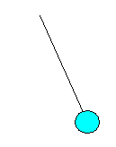

PendulumA simple pendulum is a physical abstraction that considers a point mass m that oscillates in a vertical plane at the end of a rod of length L and negligible mass. |
 |
If we consider the force exerted by gravity on the mass as constant, g, the motion of a simple pendulum can be modeled by a second order ordinary differential equation.
The equation includes a friction force, with b as friction coefficient, and a time-dependent external torque of the form A*sin(F*t), which drives the motion. Typically, the pendulum starts oscillating at time t=0, from a given angle with zero initial angular velocity.